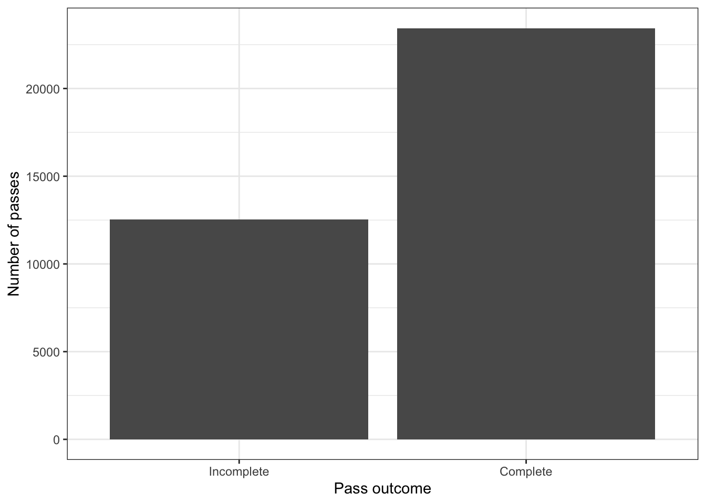
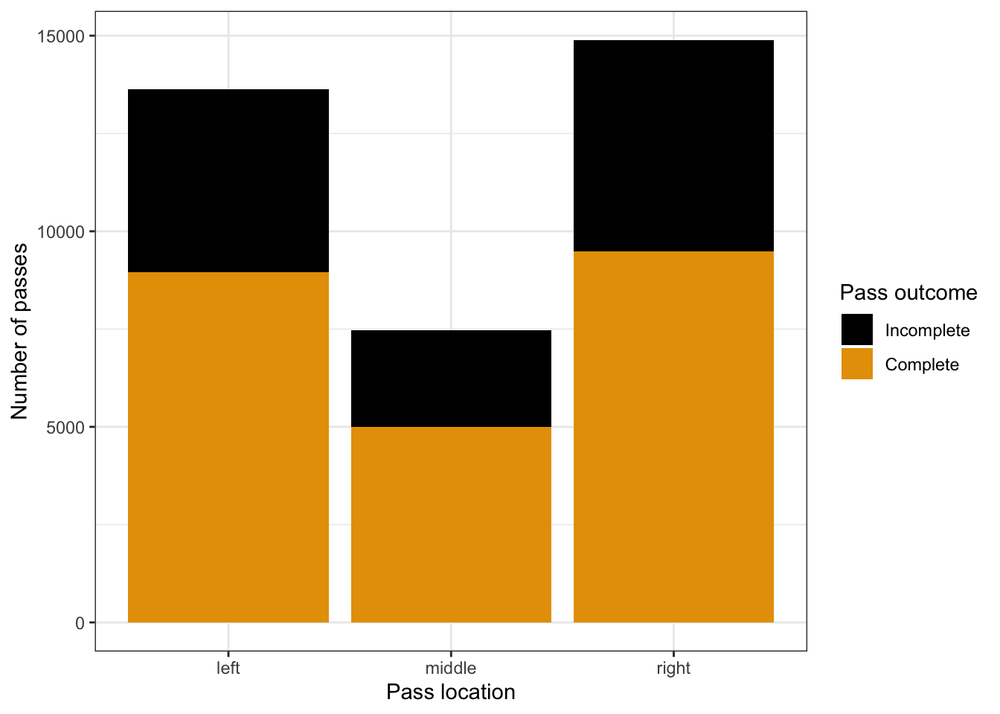
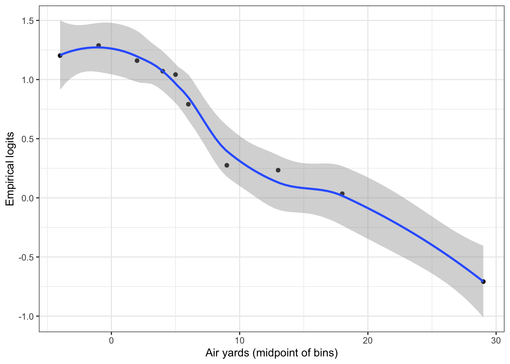
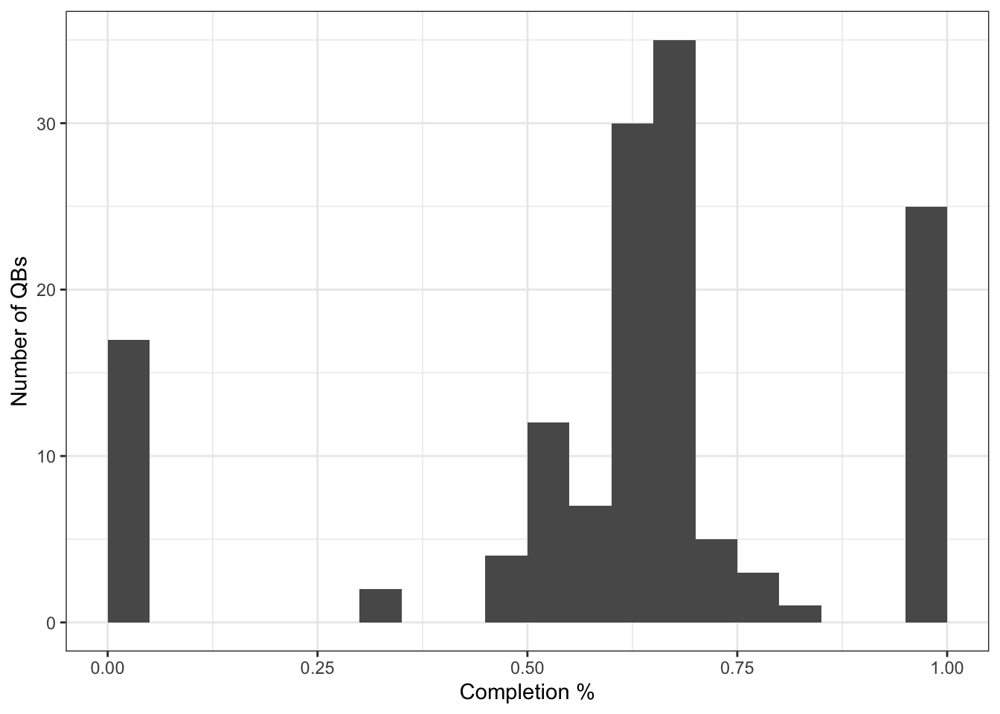
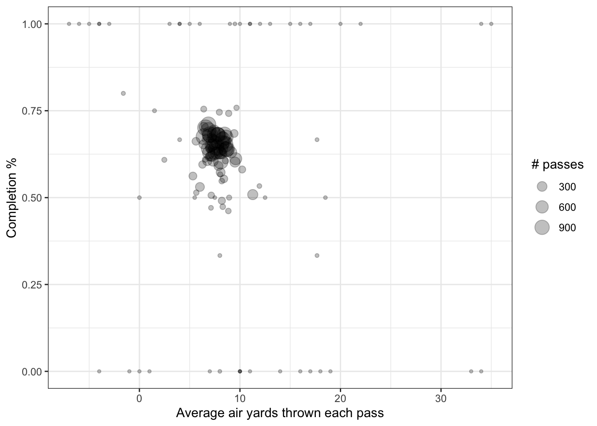
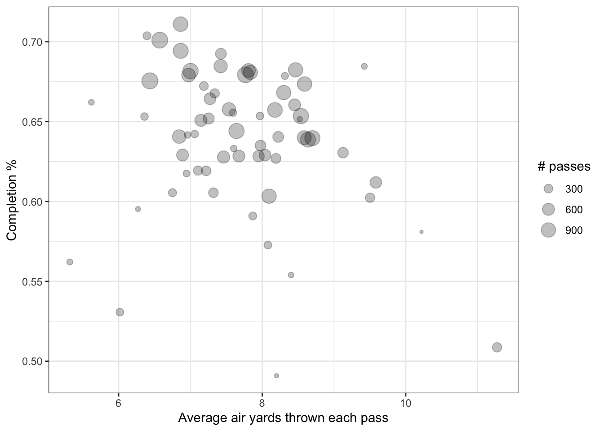
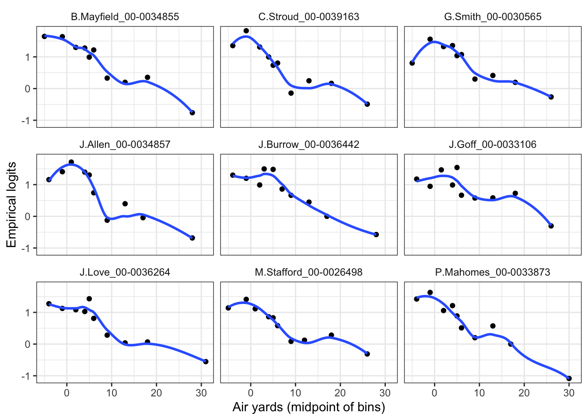
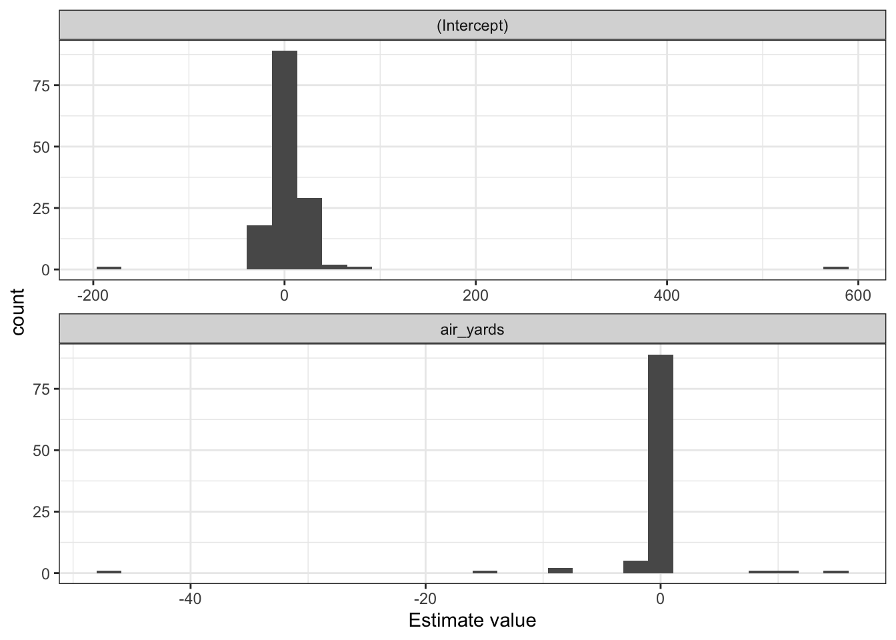
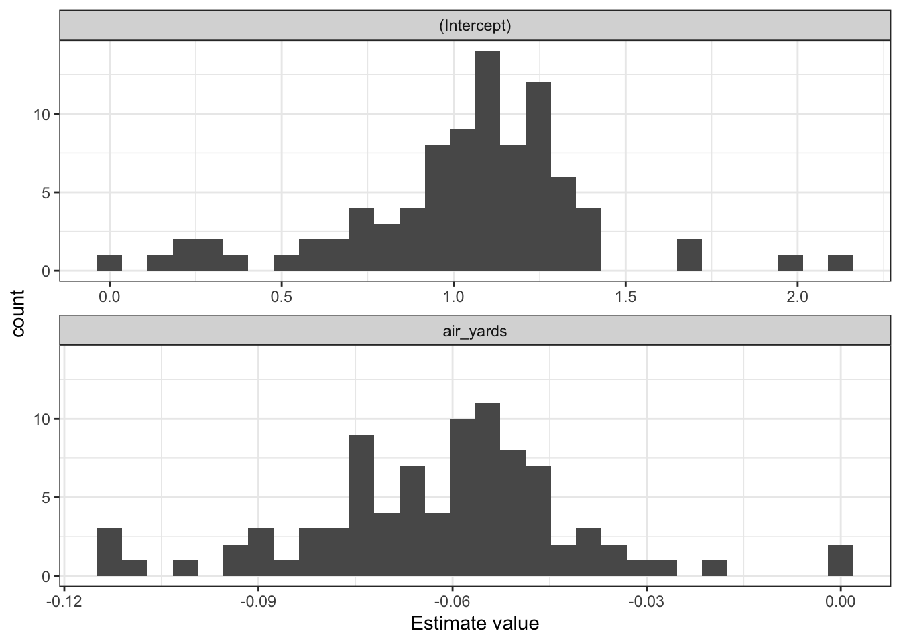

The goal of this demo is to walk through the initial steps of multilevel modeling in the context of modeling pass completion probability. We’ll continue where we left off in the cpoe.qmd demo, using a dataset corresponding to pass attempts in NFL regular season games during the 2023 and 2024 seasons. You can find the dataset and code to create the data (init_nfl_passing_data.R) on Canvas.
The following code chunk reads in the relevant dataset (assuming it is in the correct directory) of passing plays:
# A tibble: 35,987 × 17
game_id play_id drive posteam defteam posteam_type passer_name_id
<chr> <dbl> <dbl> <chr> <chr> <chr> <chr>
1 2023_01_ARI_WAS 77 1 WAS ARI home S.Howell_00-00370…
2 2023_01_ARI_WAS 124 1 WAS ARI home S.Howell_00-00370…
3 2023_01_ARI_WAS 147 1 WAS ARI home S.Howell_00-00370…
4 2023_01_ARI_WAS 172 1 WAS ARI home S.Howell_00-00370…
5 2023_01_ARI_WAS 197 1 WAS ARI home S.Howell_00-00370…
6 2023_01_ARI_WAS 220 1 WAS ARI home S.Howell_00-00370…
7 2023_01_ARI_WAS 332 2 ARI WAS away J.Dobbs_00-0033949
8 2023_01_ARI_WAS 357 2 ARI WAS away J.Dobbs_00-0033949
9 2023_01_ARI_WAS 380 2 ARI WAS away J.Dobbs_00-0033949
10 2023_01_ARI_WAS 526 3 WAS ARI home S.Howell_00-00370…
# ℹ 35,977 more rows
# ℹ 10 more variables: receiver_name_id <chr>, complete_pass <dbl>,
# pass_location <chr>, air_yards <dbl>, qb_hit <dbl>, epa <dbl>,
# yardline_100 <dbl>, down <dbl>, ydstogo <dbl>, is_home <dbl>
Modeling completion probability with logistic regression
In the previous demo, we fit a logistic regression model to estimate the probability of a complete pass (i.e., when complete_pass == 1) based on a few variables:
pass_location: a categorical variable denoting which side of the field the ball was thrown to, either left, middle, or right (based on manually charted data). We’re going to be lazy and treat left as the reference level, but one should think more carefully about which level is more appropriate.
air_yards: a quantitative variable indicating how many yards the ball traveled in the air perpendicular to the line of scrimmage. This does not measure the actual distance traveled by the ball (e.g., if the QB throws the ball across the field but only to the line of scrimmage then it has traveled 0 air yards), but still provides measure for the length of the pass.
qb_hit: a binary indicator variable denoting whether or not the QB was hit on the play, serving as a proxy for plays where the QB observes pressure (i.e., a tougher situation to make a throw).
The following code chunk fits this logistic regression model on all of the data:
Call:
glm(formula = complete_pass ~ pass_location + air_yards + qb_hit,
family = "binomial", data = nfl_passing_data)
Deviance Residuals:
Min 1Q Median 3Q Max
-2.1567 -1.1713 0.7187 0.8481 2.3971
Coefficients:
Estimate Std. Error z value Pr(>|z|)
(Intercept) 1.221994 0.021886 55.834 < 2e-16 ***
pass_locationmiddle 0.164057 0.032141 5.104 3.32e-07 ***
pass_locationright -0.090248 0.026235 -3.440 0.000582 ***
air_yards -0.058879 0.001203 -48.957 < 2e-16 ***
qb_hit -1.080257 0.038836 -27.816 < 2e-16 ***
---
Signif. codes: 0 '***' 0.001 '**' 0.01 '*' 0.05 '.' 0.1 ' ' 1
(Dispersion parameter for binomial family taken to be 1)
Null deviance: 46543 on 35986 degrees of freedom
Residual deviance: 42900 on 35982 degrees of freedom
AIC: 42910
Number of Fisher Scoring iterations: 4
Multiple levels in the data
In the previous logistic regression model, we naively ignored the structure of the data: there are repeated pass attempts by quarterbacks (QBs, passer_name_id), repeatedly to a set of receivers (receiver_name_id), against different defenses (defteam). For the sake of this intro demo, we will just focus on QBs and will return to handling receivers and defenses later.
Ignoring receivers and defenses, there are two levels in the dataset:
Level One: individual pass attempts, which are the the simplest and most frequent unit of observation in the dataset. For each pass attempt we have information describing the pass such as the pass_location, air_yards, and if the QB was hit on the play qb_hit.
Level Two: the QB attempting the pass, which is a larger observational unit. In other words, we observe the same QB across multiple pass attempts - which should make us think the outcome of such attempts are correlated with each other.
When we think about performing preliminary exploratory data analysis (EDA), we should consider it at both levels of the data. This includes starting with a basic summary of the response at the pass level:
nfl_passing_data |>ggplot(aes(x =as.factor(complete_pass))) +geom_bar() +scale_x_discrete(labels =c("Incomplete", "Complete")) +labs(x ="Pass outcome", y ="Number of passes") +theme_bw()

As well seeing how the outcome varies as a function of the different variables, such as the pass location:
nfl_passing_data |>ggplot(aes(x = pass_location,fill =as.factor(complete_pass))) +geom_bar() + ggthemes::scale_fill_colorblind(labels =c("Incomplete", "Complete")) +labs(x ="Pass location", y ="Number of passes",fill ="Pass outcome") +theme_bw()

And by making an empirical logit plot (similar to the logit_expected_goals.qmd demo) to view the relationship between the response with the air yards variable:
`geom_smooth()` using method = 'loess' and formula = 'y ~ x'

In order to consider EDA for Level Two, we can start by making a summary dataset with one row for each QB in the data along with appropriate summaries of the different considered explanatory variables:
And then we can repeat the EDA process at this level, such as viewing the distribution of completion percentages for each QB:
qb_summary |>ggplot(aes(x = cp)) +geom_histogram(breaks =seq(0, 1, by =0.05), closed ="left") +labs(x ="Completion %",y ="Number of QBs") +theme_bw()

As well as relationships between completion percentages with the different variables, such as average air yards:
qb_summary |>ggplot(aes(x = ave_air_yards, y = cp)) +geom_point(aes(size = n_passes), alpha =0.25) +labs(x ="Average air yards thrown each pass",y ="Completion %",size ="# passes") +theme_bw()

To make this easier to see, here is the same plot but for passers with at least 100 attempts:
qb_summary |>filter(n_passes >=100) |>ggplot(aes(x = ave_air_yards, y = cp)) +geom_point(aes(size = n_passes), alpha =0.25) +labs(x ="Average air yards thrown each pass",y ="Completion %",size ="# passes") +theme_bw()

We can also view the Level One EDA for each observation unit in Level Two. For instance, the code chunk below displays the empirical logit plots for the nine QBs with the most passing attempts:
`geom_smooth()` using method = 'loess' and formula = 'y ~ x'

From this we can see slight differences in the relationship with air yards across the small sample of QBs. Patrick Mahomes displays a relatively monotone relationships, while players such as Geno Smith and Josh Allen display a clear nonlinear relationship between the empirical logit and air yards.
Modeling strategies
When handling data of this structure, we have a few different options for how to approach modeling the data. For ease, we’ll only consider the air_yards variable as a coefficient in the following models below. But the same ideas can be applied to models with more features.
1) Naive Level One Model
Our starting point, is the model we already considered that completely ignores the QB-level of the data. The following code chunk fits this logistic regression model as a function of the air_yards plus an intercept:
init_logit <-glm(complete_pass ~ air_yards,data = nfl_passing_data, family ="binomial")summary(init_logit)
Call:
glm(formula = complete_pass ~ air_yards, family = "binomial",
data = nfl_passing_data)
Deviance Residuals:
Min 1Q Median 3Q Max
-2.1115 -1.2496 0.7541 0.8767 2.1930
Coefficients:
Estimate Std. Error z value Pr(>|z|)
(Intercept) 1.11219 0.01529 72.75 <2e-16 ***
air_yards -0.05900 0.00119 -49.57 <2e-16 ***
---
Signif. codes: 0 '***' 0.001 '**' 0.01 '*' 0.05 '.' 0.1 ' ' 1
(Dispersion parameter for binomial family taken to be 1)
Null deviance: 46543 on 35986 degrees of freedom
Residual deviance: 43746 on 35985 degrees of freedom
AIC: 43750
Number of Fisher Scoring iterations: 4
However, this completely ignores the correlated structure of the data and we ideally like to somehow account for the QB in the model.
2) Two-Stage Modeling Approach
Alternatively, since we believe QBs are independent of each other, we can fit separate logistic regression models for each QB in the dataset. For example, the code chunk below fits the same logistic regression model as above but only for pass attempts by Patrick Mahomes:
Call:
glm(formula = complete_pass ~ air_yards, family = "binomial",
data = mahomes_passes)
Deviance Residuals:
Min 1Q Median 3Q Max
-2.0991 -1.1114 0.6825 0.8297 2.3811
Coefficients:
Estimate Std. Error z value Pr(>|z|)
(Intercept) 1.263493 0.084389 14.97 <2e-16 ***
air_yards -0.074776 0.007257 -10.30 <2e-16 ***
---
Signif. codes: 0 '***' 0.001 '**' 0.01 '*' 0.05 '.' 0.1 ' ' 1
(Dispersion parameter for binomial family taken to be 1)
Null deviance: 1479.8 on 1173 degrees of freedom
Residual deviance: 1349.3 on 1172 degrees of freedom
AIC: 1353.3
Number of Fisher Scoring iterations: 4
If we compare the Mahomes’ model to the naive model, we notice some slight differences in the intercept and coefficient estimates as well as larger standard errors (due to the smaller sized dataset).
We can repeat this for every single QB in the dataset, storing the intercept and coefficients in a table. For simplicity, we’ll only do this with the air_yards variable since the categorical variables require observing the different levels at least once. You can ignore the warning messages that are popping up for players with only one observation.
qb_coef_table <-map_dfr(unique(nfl_passing_data$passer_name_id),function(qb_i) { qb_i_data <- nfl_passing_data |>filter(passer_name_id == qb_i) qb_i_model <-glm(complete_pass ~ air_yards,data = qb_i_data, family ="binomial")# Return the tidy coefficient table: broom::tidy(qb_i_model) |>mutate(qb = qb_i) })# Ignore the warning messages that are displayed
We can visualize what the distribution for the intercepts and coefficients looks like:
`stat_bin()` using `bins = 30`. Pick better value with `binwidth`.
Warning: Removed 40 rows containing non-finite outside the scale range
(`stat_bin()`).

There are so notable extreme values making this figure difficult to read. We can zoom in on the relevant portions with appropriate filters:
qb_coef_table |># First filter for the Intercept condition, based on reasonable cutofffilter((term =="(Intercept)"&abs(estimate) <=3) |# And then for air_yards: (term =="air_yards"&abs(estimate) <= .5)) |>ggplot(aes(x = estimate)) +geom_histogram() +facet_wrap(~term, ncol =1, scales ="free_x") +labs(x ="Estimate value") +theme_bw()
`stat_bin()` using `bins = 30`. Pick better value with `binwidth`.

Based on this plot, we may decide to try modeling the intercepts and slopes at the QB level via their own regression models. In other words, we can treat the intercepts and slopes as the response variable, and fit a regression model (maybe as a function of QB level variables) to model the coefficients.
# First filter to create separate datasets for each term:intercept_data <- qb_coef_table |>filter(term =="(Intercept)")slope_data <- qb_coef_table |>filter(term =="air_yards")# And now fit intercept-only models:intercept_lm <-lm(estimate ~1, data = intercept_data)slope_lm <-lm(estimate ~1, data = slope_data)
The summary of these models provide us the averages and estimates for the variances of their respective distributions:
summary(intercept_lm)
Call:
lm(formula = estimate ~ 1, data = intercept_data)
Residuals:
Min 1Q Median 3Q Max
-190.02 -5.94 -5.61 -4.75 570.27
Coefficients:
Estimate Std. Error t value Pr(>|t|)
(Intercept) 6.734 4.495 1.498 0.136
Residual standard error: 53.37 on 140 degrees of freedom
summary(slope_lm)
Call:
lm(formula = estimate ~ 1, data = slope_data)
Residuals:
Min 1Q Median 3Q Max
-45.606 0.480 0.497 0.506 16.270
Coefficients:
Estimate Std. Error t value Pr(>|t|)
(Intercept) -0.5565 0.5413 -1.028 0.306
Residual standard error: 5.44 on 100 degrees of freedom
(40 observations deleted due to missingness)
There are clear limitations with this type of approach:
We are completely ignoring the number of observations (in this case pass attempts) for each QB, treating QBs with only a small number of attempts the same as QBs with many attempts.
We drop players with insufficient number of observations for slopes.
We are not sharing information across the QBs when modeling the relationship between air yards and completion probability. Ideally, we want to leverage the information across the full dataset in order to provide better estimates for the relationships.
This leads us to the ideal approach for modeling such data…
3) Unified Multilevel Model
In order to fit multilevel models in R, we need to use the lme4 package, which follows a unique syntax that we’ll breakdown in the lectures ahead. First install the package:
install.packages("lme4")
Then we can fit a generalized linear multilevel model (GLMM) using the glmer() function in the package, which is analogous to the glm() function in R. Note that in Homework 2 you will use the lmer() function which is used for modeling continuous data under the assumption of Gaussian errors. In this problem, we are modeling completion probability so we are relying on a linear model for the log odds function. The following code chunk demonstrates how to fit a GLMM for completion probability with random effects for QB intercepts and air yards slopes, along with a fixed effect for air yards:
library(lme4)
Warning: package 'lme4' was built under R version 4.2.3
Loading required package: Matrix
Warning: package 'Matrix' was built under R version 4.2.3
Attaching package: 'Matrix'
The following objects are masked from 'package:tidyr':
expand, pack, unpack